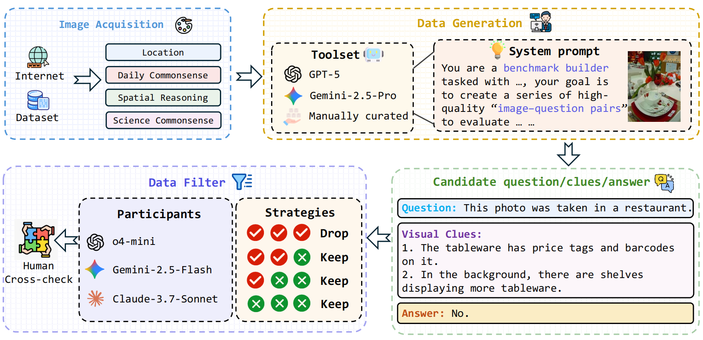
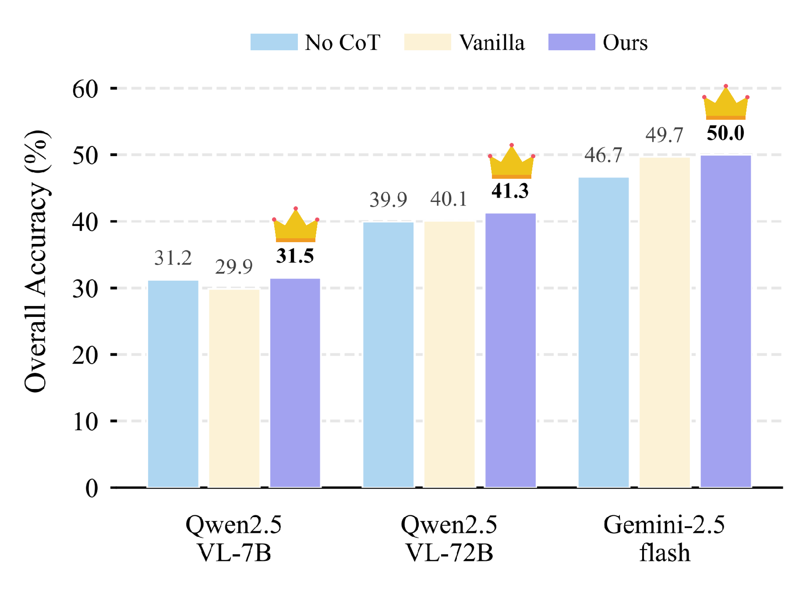
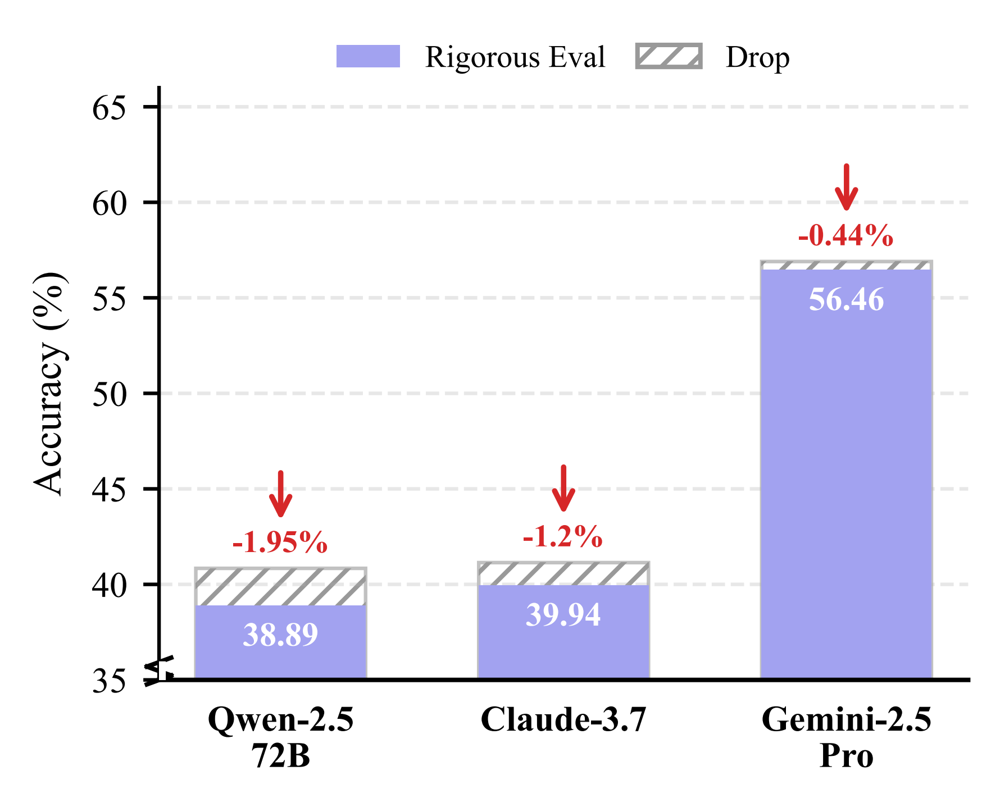

Reasoning Examples
DailyClue features four daily life scenarios across 16 reasoning subtasks. Click arrows to navigate.


Daily scenarios are characterized by visual richness, requiring Multimodal Large Language Models (MLLMs) to filter noise and identify decisive visual clues for accurate reasoning. Yet, current benchmarks predominantly aim at evaluating MLLMs' pre-existing knowledge or perceptual understanding, often neglecting the critical capability of reasoning.
To bridge this gap, we introduce DailyClue, a benchmark designed for visual clue-driven reasoning in daily scenarios. Our construction is guided by two core principles: (1) strict grounding in authentic daily activities, and (2) challenging query design that necessitates more than surface-level perception. Instead of simple recognition, our questions compel MLLMs to actively explore suitable visual clues and leverage them for subsequent reasoning. To this end, we curate a comprehensive dataset spanning four major daily domains and 16 distinct subtasks.
Comprehensive evaluation across MLLMs and agentic models underscores the formidable challenge posed by our benchmark. Our analysis reveals several critical insights, emphasizing that the accurate identification of visual clues is essential for robust reasoning.
We employ a carefully controlled generation and filtering pipeline to ensure high-quality, reasoning-intensive questions. The process involves candidate triplet generation by top-tier MLLMs, followed by multi-model verification and rigorous human cross-checks.

DailyClue features four daily life scenarios across 16 reasoning subtasks. Click arrows to navigate.
Performance comparison on the DailyClue benchmark. Metrics denote accuracy (%). The best result is highlighted in bold red, and the second best is underlined.
| Model | Overall | Location Identification |
Spatial Relationship |
Daily Commonsense |
Scientific Commonsense |
|---|---|---|---|---|---|
| Open-source MLLMs | |||||
| LLaVA-OneVision-7B | 24.47 | 10.50 | 34.97 | 25.56 | 31.71 |
| LLaVA-OneVision-72B | 33.18 | 15.50 | 47.85 | 33.33 | 42.28 |
| LLaVA-OneVision-1.5-8B-Instruct | 29.43 | 10.50 | 47.85 | 27.78 | 38.21 |
| InternVL3-8B | 31.08 | 13.50 | 31.67 | 31.67 | 41.46 |
| InternVL3-38B | 36.94 | 17.00 | 47.85 | 47.22 | 39.84 |
| InternVL3-78B | 40.84 | 18.00 | 54.60 | 52.78 | 42.28 |
| InternVL-3.5-38B | 36.91 | 14.00 | 49.69 | 43.33 | 43.90 |
| Qwen2.5-VL-7B | 30.63 | 15.00 | 39.88 | 37.22 | 34.15 |
| Qwen2.5-VL-32B | 35.59 | 21.50 | 42.94 | 42.78 | 38.21 |
| Qwen2.5-VL-72B | 40.84 | 24.50 | 47.85 | 48.33 | 47.15 |
| Qwen3-VL-235B-A22B-Thinking | 44.59 | 23.00 | 49.08 | 56.67 | 56.10 |
| Qwen3-VL-235B-A22B-Instruct | 40.69 | 22.50 | 46.63 | 50.00 | 48.78 |
| Close-source MLLMs | |||||
| 🥉 Gemini-2.5-Flash | 50.00 | 32.50 | 55.83 | 59.44 | 56.91 |
| 🥇 Gemini-2.5-Pro | 56.90 | 41.50 | 61.35 | 62.77 | 67.48 |
| Claude-3.7-Sonnet | 41.14 | 18.50 | 57.06 | 47.22 | 47.97 |
| Claude-sonnet-4 | 41.74 | 22.00 | 52.15 | 48.89 | 49.59 |
| Claude-sonnet-4.5 | 41.74 | 21.00 | 53.99 | 49.44 | 47.97 |
| o4-mini | 47.00 | 25.50 | 58.28 | 58.33 | 50.41 |
| 🥈 GPT-5 | 50.90 | 38.00 | 57.67 | 51.67 | 61.79 |
| Agentic Models | |||||
| DeepEyes-7B | 30.93 | 18.50 | 44.17 | 30.00 | 34.96 |
| VLM-R3 | 33.18 | 19.00 | 42.33 | 36.11 | 39.84 |
| TreeVGR-7B | 27.78 | 14.00 | 40.49 | 27.18 | 33.33 |
| REVPT | 25.83 | 6.50 | 38.04 | 32.22 | 31.71 |
| Thyme | 46.25 | 69.00 | 42.33 | 29.44 | 39.02 |
| PyVision | 39.48 | 18.50 | 47.23 | 48.33 | 50.40 |
| Human Baseline | |||||
| Human Baseline | 45.50 | 19.33 | 70.67 | 40.00 | 52.00 |
Despite strong reasoning capabilities, MLLMs' performance is heavily bottlenecked by the failure to capture critical visual semantics. Providing Ground Truth (GT) clues yields substantial gains. However, models are vulnerable to visual sycophancy—misleading textual clues can override their own visual judgment and induce hallucinations.
| Model | Clue Source | ||||
|---|---|---|---|---|---|
| Qwen2.5-VL-72B | Claude-3.7 | Gemini-2.5-Pro | GT Clue | No Clue | |
| Qwen2.5-VL-72B | 40.09 (-0.75) | 41.29 (+0.45) | 48.80 (+7.96) | 51.50 (+10.66) | 40.84 |
| Claude-3.7 | 42.49 (+1.35) | 43.39 (+2.25) | 51.95 (+10.81) | 56.00 (+14.86) | 41.14 |
| Gemini-2.5-Pro | 52.85 (-4.05) | 53.15 (-3.75) | 55.26 (-1.64) | 58.55 (+1.65) | 56.90 |
Mandating active visual clues within the Chain-of-Thought (CoT) acts as a critical anchor. This constraint effectively mitigates reasoning drift. Across different model scales, explicitly prompting models to actively seek visual clues (Our Clue-guided CoT) consistently outperforms vanilla reasoning baselines.

Superficial accuracy may belie a disconnect between reasoning and prediction. Under our Rigorous Evaluation Protocol (which requires semantic intersection between predicted clues and GT clues), models like Qwen2.5-VL-72B and Claude-3.7 show noticeable accuracy drops, indicating occasional reliance on illusionary or useless clues. Gemini-2.5-Pro demonstrated the highest reasoning fidelity with a negligible drop of only 0.44%.

@article{dailyclue2026,
title={Seek-and-Solve: Benchmarking MLLMs for Visual Clue-Driven Reasoning in Daily Scenarios},
author={Anonymous Authors},
year={2026}
}